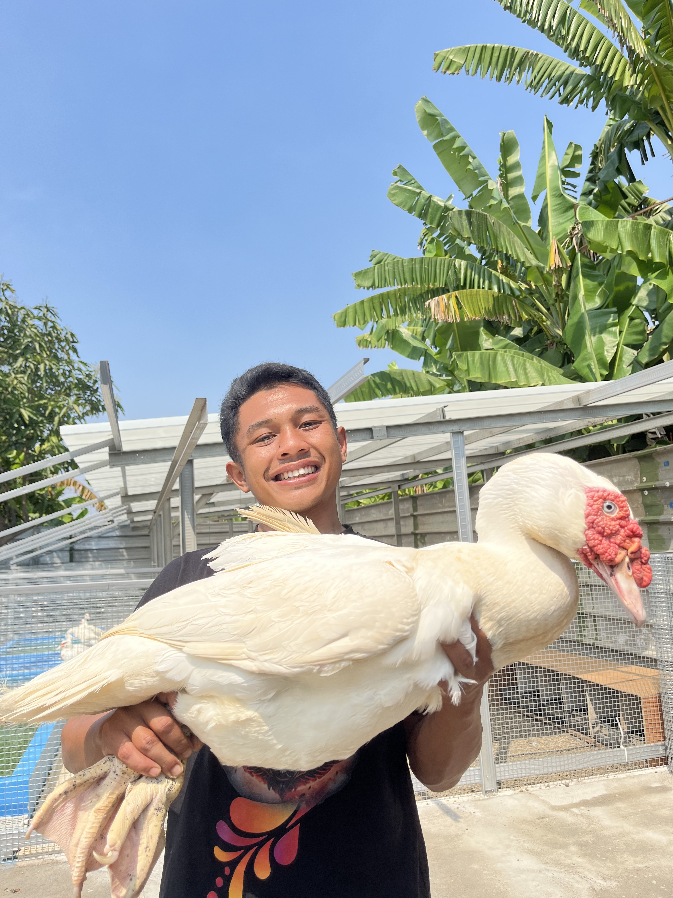

🌾
Pakan & nutrisi
Kenali pentingnya pakan seimbang, ketersediaan air bersih, serta penyesuaian ransum dengan umur dan kondisi ternak.
Baca ringkasan →
Ruang informasi seputar pemeliharaan, pakan, kesehatan, dan pembibitan entok. Belajar dari dasar, merawat dengan benar, dan mengembangkan peternakan secara bertahap.
Materi ringkas untuk membantu peternak memahami kebutuhan entok dan membangun rutinitas pemeliharaan yang lebih teratur.
Kenali pentingnya pakan seimbang, ketersediaan air bersih, serta penyesuaian ransum dengan umur dan kondisi ternak.
Baca ringkasan →Perhatikan ventilasi, ruang gerak, lantai yang tidak becek, kebersihan tempat minum, dan perlindungan dari cuaca.
Lihat panduan →Pelajari pencatatan silsilah, kondisi indukan, daya tetas, pertumbuhan, dan pemilihan bibit secara bertanggung jawab.
Pelajari dasar →Produktivitas tidak hanya bergantung pada ukuran tubuh. Kesehatan, lingkungan, pakan, air, dan pengamatan harian sama pentingnya.
Periksa kebersihan wadah dan ketersediaan air.
Amati aktivitas, nafsu makan, dan tanda sakit.
Berikan ransum sesuai kebutuhan umur dan tujuan pemeliharaan.
Singkirkan kotoran berlebih dan area yang basah.
Catatan yang rapi membantu mengevaluasi kualitas keturunan dari waktu ke waktu, bukan hanya mengandalkan perkiraan.
Catat bobot dan ukuran pada umur yang konsisten, bersama kondisi pakan serta kesehatan.
Catat asal-usul, riwayat reproduksi, daya tetas, dan kondisi induk serta pejantan.
Hindari seleksi yang mengabaikan struktur tubuh, kemampuan bergerak, atau kesejahteraan ternak.
Catatan: hasil pertumbuhan dipengaruhi genetika, umur, pakan, lingkungan, dan kesehatan. Informasi di situs ini bersifat edukatif; untuk diagnosis atau program kesehatan spesifik, konsultasikan dengan tenaga kesehatan hewan.
Ingin bertukar pengalaman tentang pemeliharaan entok jumbo, membahas kerja sama, atau bertanya tentang isi panduan? Hubungi pengelola untuk melanjutkan diskusi.
Istilah yang umum dipakai untuk entok dengan ukuran atau potensi pertumbuhan besar. Ukuran dewasa bervariasi menurut jenis kelamin, genetika, umur, dan pemeliharaan.
Pakan sangat penting, tetapi bukan satu-satunya faktor. Genetika, kesehatan, lingkungan, dan manajemen pemeliharaan juga berpengaruh.
Periksa setidaknya setiap pagi dan sore, serta lebih sering bila air cepat kotor atau cuaca panas. Pastikan air selalu tersedia dan wadah aman.
Bisa dikembangkan menjadi katalog bibit, halaman profil peternakan, formulir pemesanan, dan tombol WhatsApp setelah nama usaha serta kontak resmi ditambahkan.